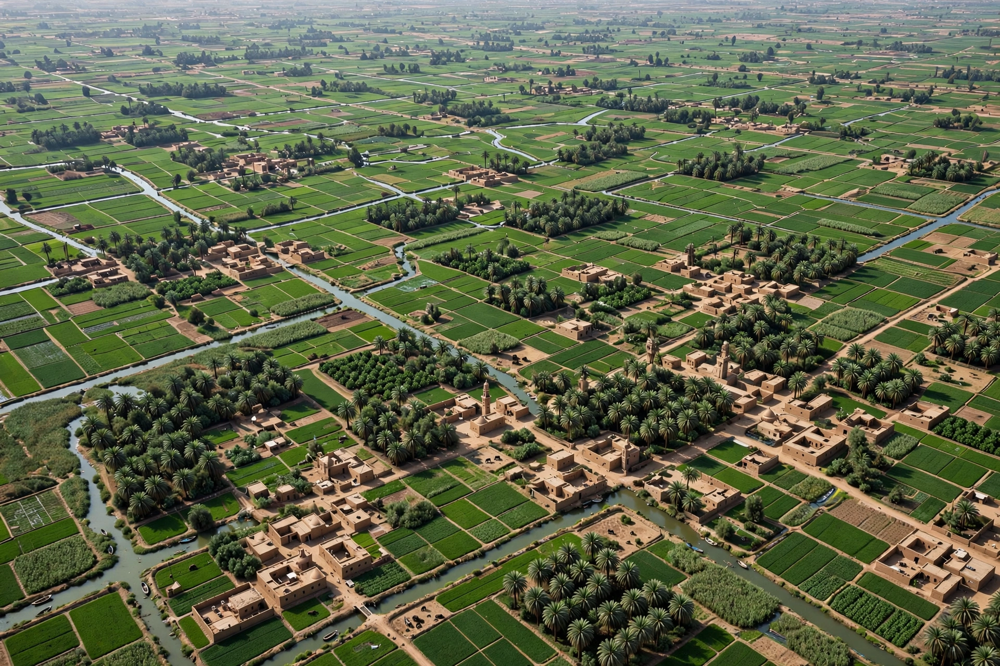

[Image placeholder: Irrigated farmland and villages in the Nile Delta]The **Nile Delta** is the delta formed in northern Egypt where the Nile spreads out and drains into the Mediterranean Sea. Beginning just south of Cairo, where the river splits into the Rosetta (west) and Damietta (east) branches, the delta fans out over about 240 km of coastline — one of the world's largest river deltas (roughly 20,000–25,000 km²) and the origin of the very word 'delta', from its triangular shape likened to the Greek letter Δ.
The delta is Egypt's agricultural heartland and population core: intensively farmed (cotton, rice, maize, wheat, citrus) and holding cities such as Alexandria, Tanta, Mansoura and Zagazig. Herodotus called Egypt 'the gift of the Nile'; since the Aswan High Dam (1970) ended the annual flood, the delta no longer receives its silt, and its edges erode while salinity rises — making it acutely vulnerable to sea-level rise, with large areas less than 1 m above the sea.
The delta held great cities of pharaonic and classical Egypt — Sais, Tanis, Bubastis, Canopus and Heracleion (now drowned offshore), and later Alexandria at its western edge. Its seven ancient mouths of the Nile are reduced to two today.